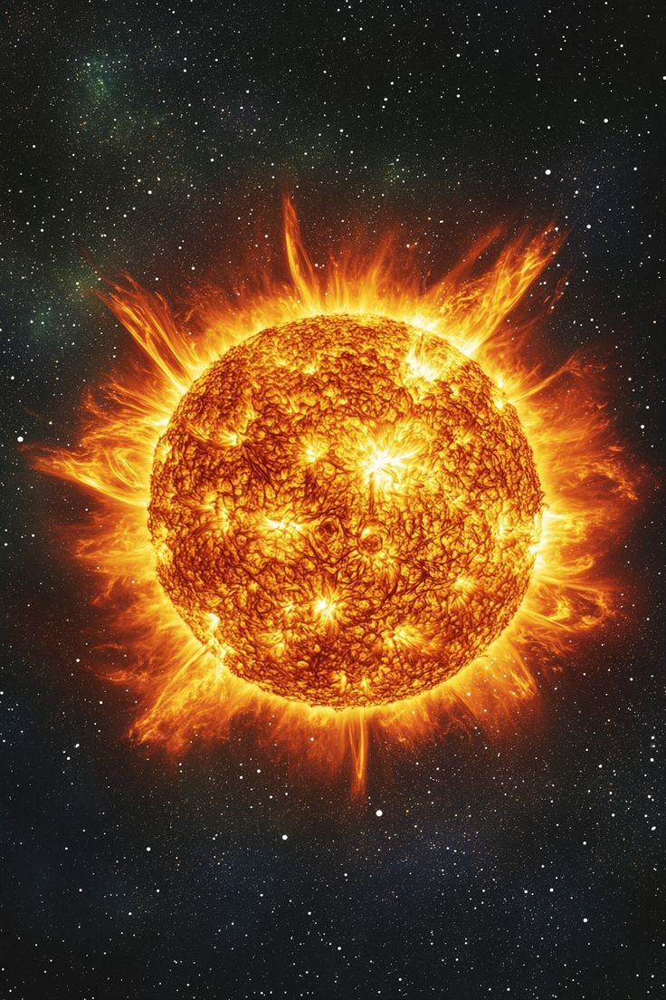

A nearly perfect sphere of hot plasma powered by nuclear fusion deep within its core. The Sun supplies nearly all the energy required for life on Earth and dominates the Solar System, containing more than 99% of its total mass. Its light has guided civilizations, powered ecosystems, and shaped the history of our planet for billions of years.